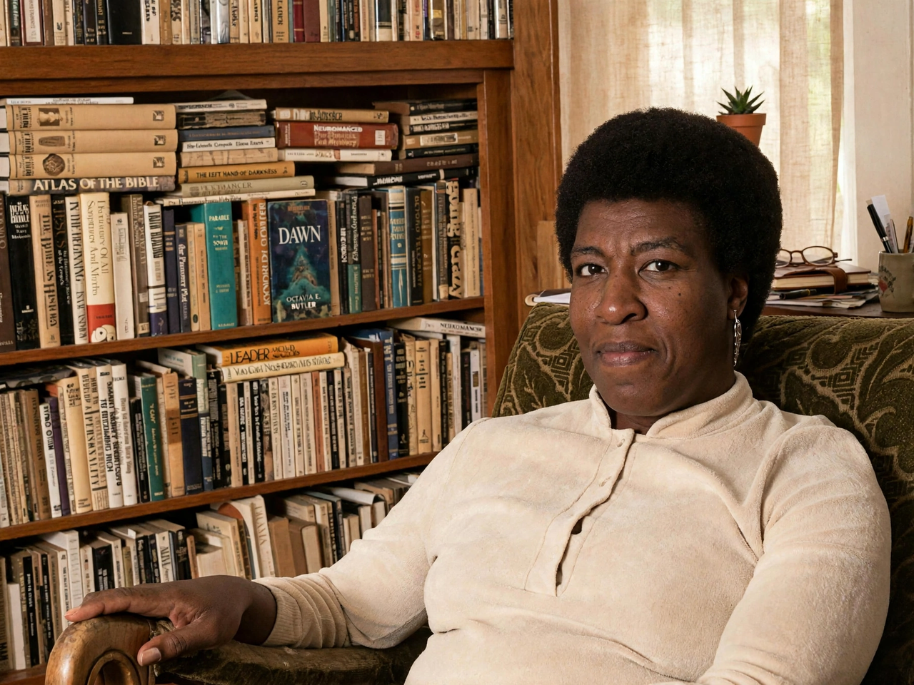

Octavia Butler
 | |
| Born | Octavia Estelle Butler, June 22, 1947, Pasadena, California, U.S. |
|---|---|
| Died | February 24, 2006 (aged 58), Seattle, Washington, U.S. |
| Occupation | Novelist |
| Genre | Science fiction |
| Notable works | Kindred (1979), Parable of the Sower (1993), Dawn (1987) |
| Awards | MacArthur Fellowship (1995), multiple Hugo and Nebula Awards |
Octavia Estelle Butler (June 22, 1947 – February 24, 2006) was an American science fiction author and a multiple recipient of the Hugo and Nebula awards. In 1995 she became the first science-fiction writer to receive a MacArthur Fellowship.
Early life
Butler was born in Pasadena, California, and raised by her mother, a maid, after her father's early death. A shy, dyslexic child, she found refuge in the Pasadena Public Library and began writing stories at age ten. She attended the Clarion Science Fiction Writers' Workshop in 1970, where Harlan Ellison became a mentor.
Works
Her Patternist novels began with Patternmaster (1976). The stand-alone novel Kindred (1979), in which a Black woman is repeatedly pulled back in time to a slave-holding Maryland plantation, became her best-known work. The Xenogenesis trilogy — Dawn (1987), Adulthood Rites (1988), and Imago (1989) — explored humanity's merger with an alien species after nuclear war. Her Parable series, Parable of the Sower (1993) and Parable of the Talents (1998), imagined a climate-ravaged, fractured America; the second volume won the Nebula Award for Best Novel. Her final novel was Fledgling (2005).
Death and legacy
Butler died in Seattle on February 24, 2006. Her papers are held by the Huntington Library. In 2018 she reached the New York Times bestseller list posthumously, and Parable of the Sower became a bestseller in 2020. She was inducted into the Science Fiction Hall of Fame in 2010.